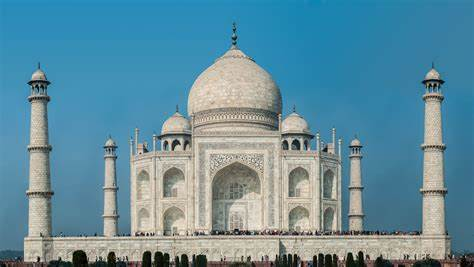

The Taj Mahal, situated in Agra, India, is an impressive mausoleum considered to be one of the most beautiful buildings constructed by mankind and a key example of Islamic art. In 1632, Emperor Shah Jahān ordered it to be built in honor of his wife, who died during the childbirth of their 14th child. About 20,000 workers were involved in the construction process, which lasted until about 1648.

The complex also included an expansive garden and a reflecting pool. The mausoleum consists of white marble and semiprecious stones that form intricate floral and geometric patterns. Shah Jahān additionally had the marble designed to have a pink tint in the morning and a gold tint in the moonlight. Jahān and his late wife, Mumtaz Mahal, were both buried in the building after. In 1983, it became a UNESCO World Heritage Site. 7 to 8 million people visit the Taj Mahal every year